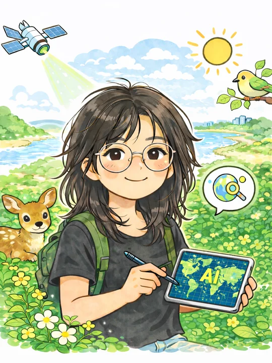

Ph.D. Student · Year 1
Lula (Feifei) Yang
University of Tennessee, KnoxvilleGeography & Sustainability
Her research uses geospatial data science to investigate environmental health, spatial equity, urban systems, and human–environment interactions.